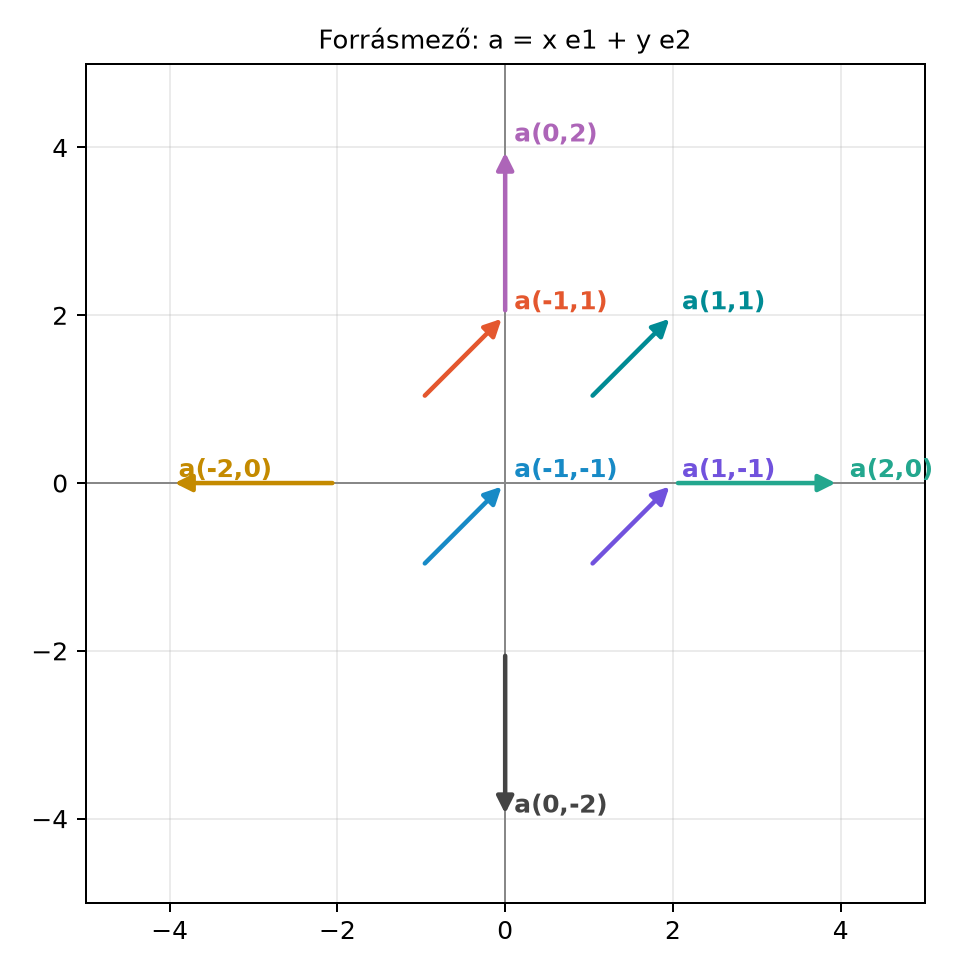
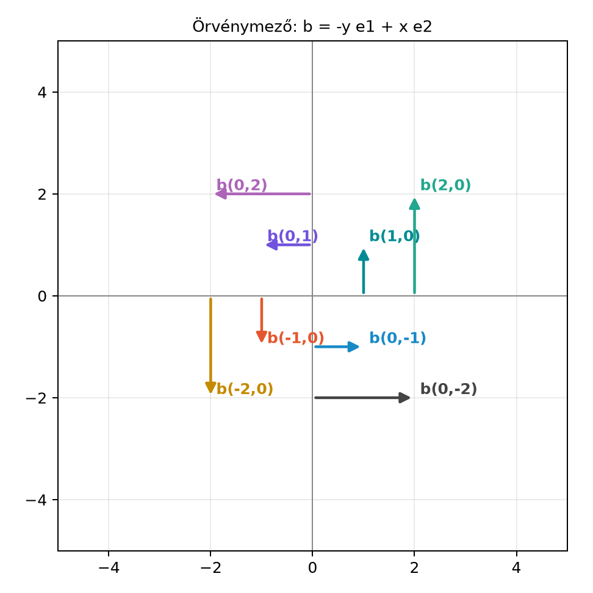

18.1 A vektorderivált ∇:
divergencia és rotáció egyben
Előfeltétel: a IV. modul rotorjai, valamint a 16–17.
fejezet (derivált és klasszikus mechanika). Az ajánlott tanulási
útvonalakat a Tanulási útvonalak és
előfeltételek foglalja össze.
18.1.1 Motiváció: miért van szükség
egyetlen vektorderiváltra?
A klasszikus vektoranalízisben egy skalármezőhöz egy vektort, a
gradienst (gradient) rendeljük, egy vektormezőhöz pedig
két, egészen más jellegű mennyiséget: a divergenciát
(divergence) és a rotációt (curl). A divergencia
skalár, és azt méri, hogy a mezőnek mennyire van forrása vagy nyelője; a
rotáció vektor, és azt méri, hogy a mező mennyire örvénylik. A két
fogalom hagyományosan külön képletekben él, pedig ugyanannak a mezőnek
két, egymást kiegészítő tulajdonságáról van szó.
A geometriai algebrában a
(nabla) operátort vektorként kezeljük, és a geometriai szorzattal
foglaljuk össze a kétféle változást:
Ez a felbontás pontosan ugyanaz, mint amit a vektorok szorzásánál
láttunk: a szimmetrikus rész skalár, az antiszimmetrikus rész bivektor.
A divergencia és a rotáció tehát nem két külön operátor, hanem egyetlen
vektorderivált két fokszámú része.
18.1.2 Szemléletes kép: forrásmező
és örvénymező
Vegyünk először egy sugarasan kifelé mutató mezőt,
:

Forrásmező: a = x e1 + y e2 - A nyilak a
kiválasztott pontokból indulnak, és a pont helyvektora irányába
mutatnak; hosszuk az origótól való távolsággal nő.
A mező minden pontban kifelé mutat, és a divergenciája minden pontban
,
nem csak az origóban: a síkon egyenletes a forrássűrűség. Az origóban
maga a mező nulla, ott nincs Coulomb-szerű szingularitás. Ha egy kis
zárt görbét nem az origó, hanem például az
pont köré rajzolunk, a kifelé mutató fluxus ugyanúgy pozitív. A
forráspont helye, a mezővonalak ábrája és a lokális divergencia tehát
külön fogalmak; ezt a 18.1.7. szakasz számolása is mutatja.
Most nézzük az
mezőt:

Örvénymező: b = -y e1 + x e2 - A nyilak a
kiválasztott pontokban az érintő irányába mutatnak; az origó körül
ellentétes irányban forognak, az óramutató járásával ellentétes
irányban.
Ez a mező az origó körül örvénylik: egy kis, az
origó köré rajzolt kör mentén a mező mindenütt érintőirányú. A rotáció
ezt az örvénylést méri.
18.1.3 Parciális derivált és
gradiens
A
operátor bevezetéséhez fel kell idéznünk a parciális
derivált (partial derivative) fogalmát. Ha
háromváltozós skalárfüggvény, akkor
azt jelenti, hogy
-t
és
-t
rögzítjük, és csak
szerint deriválunk. Például ha
,
akkor
A gradiens ezekből a parciális deriváltakból vektort épít:
A fenti példában
,
ami a legmeredekebb emelkedés irányába mutat.
18.1.4 Kétváltozós mező teljesen
kidolgozott példája
A többváltozós deriválás nehézsége nem a
jel, hanem a változók rögzítése és a láncszabály. Nézzük végig egy
konkrét skalármezőn:
Az
szerinti parciális deriváltnál
-t
állandónak tekintjük, ezért
az
szerintinél pedig
-et:
Az
pontban
,
,
tehát
.
Ez a legmeredekebb emelkedés iránya; a konkrét számokkal ellenőrizhető,
hogy a gradiens valóban az
növekedésének irányába mutat.
Ha a mező az időtől is függ, például
akkor a parciális deriváltak külön tartják a többi változót:
A szorzatszabályt operátorhatáskörrel kell alkalmazni. Ha
skalármező és
vektormező, akkor
de a sorrend nem cserélhető fel, és a
csak a mögötte álló szorzatra hat. Zárójel nélkül a kifejezés mást
jelenthet; például ha
is függ
-től,
akkor
,
míg
;
a zárójel elhagyása itt elveszti a láncszabályt.
Általános
mezőkre a szorzatszabály
Az
tényező nem húzható automatikusan
elé, mert a geometriai szorzat nem kommutatív. Rögzített ortonormált
bázisban
konstans, ezért ilyenkor az
alak használható.
Divergencia és rotáció szemléletesen. Egy kis
négyzetre a kifelé mutató fluxus összege
,
a körüljárási irányú cirkuláció pedig
.
Ezért a divergencia a területegységre jutó forráserősséget, a rotáció a
területegységre jutó örvényerősséget méri. A mélyebb integráltételek
(divergenciatétel, Stokes-tétel) itt előismeretként vagy
kitekintésként szerepelnek; a fejezet csak a lokális jelentést
használja.
Kezdeti és peremfeltétel. Egy differenciálegyenlet
megoldásához nem elég a differenciálegyenlet: kezdeti feltétel kell az
időbeli fejlődéshez, peremfeltétel pedig a térbeli tartomány szélén.
Például a hővezetés egyenlete
a
kezdeti feltétellel és a peremen előírt
feltétellel együtt értelmes feladat. A fejezet példáiban a kezdeti
feltétel mindig szerepel; a peremfeltételt ott említjük, ahol a
tartomány szélét vizsgáljuk.
18.1.5 Definíció: a
vektorderivált
Definíció. Ortonormált euklideszi bázisban a
vektorderivált (vector derivative) a
operátor. Általános, ferde koordinátákban
ahol
a koordinátabázis reciprok kerete,
pedig az
-edik
koordináta szerinti parciális derivált. Ha a mező
,
akkor a
vektorként hat a geometriai szorzattal:
Itt fontos, hogy a bázisvektorok konstansok, ezért a
parciális derivált csak az
együtthatókra hat.
Koordinátarendszerek és a bázis deriválása. A fenti
számolás rögzített bázisra vonatkozik. Három esetet kell
megkülönböztetni:
Rögzített Descartes-bázis:
konstans,
,
a bázis ortonormált.
Rögzített ferde bázis:
konstans, de nem ortonormált; a reciprok keret
is konstans, és
.
Görbevonalú koordináták (például polár vagy gömb):
az
bázisvektorok helyfüggők, ezért
a bázisvektorokra is hat. A
alak ilyenkor is érvényes, de a derivált a teljes mezőre, az
együtthatókra és a bázisvektorokra egyaránt vonatkozik.
18.1.6 Levezetés:
A geometriai szorzat alapfelbontását minden tagra alkalmazzuk. Az
-edik
tagra:
Mivel a deriválás lineáris, az
szerinti összegzés elvégezhető külön a két részre:
Az első tag a belő szorzat:
Ez a hagyományos divergencia. A második tag a
külső szorzat, és bivektort eredményez:
Így tehát
A két fokszámú rész egyszerre jelenik meg: a skalárrész a
forrássűrűség, a bivektorrész az örvénysűrűség geometriai
megfelelője.
18.1.7 A
és a rotáció dualitása
A hagyományos rotáció vektor, és a könyv konvenciója szerint
illetve
ahol
a G(3) pszeudoszkalár. Ez az összefüggés ugyanaz, mint a vektoriális
szorzat és a külső szorzat közötti dualitás a Dualitás: bivektor ↔︎ normálvektor alfejezetből.
Komponensenként ellenőrizhetjük. Legyen
A parciális deriváltak:
és hasonlóan a többi. A külső szorzat tagjai:
Összeadva, a bivektorbázis ciklikus sorrendjében:
A hagyományos rotáció:
Mivel
,
,
,
valóban
18.1.8 Kidolgozott példa:
forrásmező és örvénymező
Először a forrásmező:
A parciális deriváltak:
Így
A skalárrész
,
a bivektorrész
.
Tehát
A mezőnek minden pontban forrássűrűsége van, de nem örvénylik.
Most az örvénymező:
A parciális deriváltak:
Ezzel
A szorzatokat kiírva:
Tehát
Ez tisztán bivektor; a skalárrész nulla. Így
A rotáció a dualitás alapján:
Korábban láttuk, hogy
,
tehát
A hagyományos rotáció tehát a
tengely irányába mutat, nagysága
.
Ez éppen az az örvénylés, amit az ábrán láttunk.
18.1.9 Az integráltételek
előrejelzése
A
és a
mennyiségek nem csak pontbeli jellemzők: a Gauss-tétel a divergencia
térfogati integrálját kapcsolja a peremen átáramló mezőhöz, a
Stokes-tétel pedig a rotáció felületi integrálját a perem menti
cirkulációhoz. A geometriai kalkulus későbbi alaptétele ezeket egyetlen,
fokszámoktól független integráltételbe egyesíti. Ebben az alfejezetben
azonban megmaradunk a differenciális alaknál.
18.1.10 Tipikus hibák és
félreértések
nem cserélhető fel. A
operátor derivál is, ezért
és
általában nem ugyanaz. Ráadásul szorzatok deriválásánál a
a szorzat mindkét tényezőjére hat, ezért nem egyszerűen egy
vektortényező.
A
bivektor, nem vektor. A hagyományos rotáció vektor, de a GA-ban
az örvénylés természetes reprezentánsa a bivektor. A rotáció vektort a
dualitás adja, és az előjel a konvenciótól függ: ebben a könyvben
.
Forrás és örvény összekeverése. Egy mező lehet
forrásmentes, de örvénylő, és fordítva. A fenti két példa éppen ezt a
két tiszta esetet mutatja. Általános mezőnél mindkét rész egyszerre
jelenik meg.
Ferde koordináták. Ortonormált bázisban a
bázisvektorok konstansok, ezért a
képlete egyszerű. Ferde koordinátákban a bázisvektorok pontról pontra
változ(hat)nak, és ilyenkor a reciprok kerettel felírt
a helyes.
Mi a különbség a divergencia és a rotáció között? Miért mondhatjuk,
hogy a GA-ban mindkettő ugyanannak a
szorzatnak egy-egy fokszámú része?
18.1.11.2 (b) Kézi számolás
Számítsd ki az
mezőre a
,
a
és a
mennyiségeket.
18.1.11.3 (c) Levezetési
feladat
Bizonyítsd be komponensenként, hogy
ortonormált bázisban.
18.1.11.4 (d) Alkalmazási
feladat
Egy pontszerű elektromos töltés elektrosztatikus mezeje
ahol
és
.
Számítsd ki
-t
és
-t.
Mit mond ez a mező forrásairól és örvényeiről? (Ez az eredmény a Maxwell-egyenletek elektrosztatikus alakjában
visszaköszön.)
18.1.12 Megoldások
18.1.12.1 (a)
A divergencia skalár, és azt méri, hogy a mező egy adott pontban
mennyire forrásként viselkedik. A rotáció vektor (a GA-ban a rotáció
bivektoros megfelelője a
),
és azt méri, hogy a mező mennyire örvénylik. A
geometriai szorzatban a szimmetrikus rész a skalár
,
az antiszimmetrikus rész a bivektor
,
így a két tulajdonság egyetlen kifejezésben egyesül.
18.1.12.2 (b)
Az
mező parciális deriváltjai:
Ebből
A bivektorrészhez:
mert
.
Így a rotáció is nulla:
18.1.12.3 (c)
Legyen
.
A bivektorrész a fenti számolásból:
A hagyományos rotáció:
Szorozzuk be balról
-vel,
és használjuk az
,
,
azonosságokat:
Ezzel az állítást beláttuk.
18.1.12.4 (d)
Írjuk fel az elektromos mezőt komponensenként SI-ben. Legyen
;
ekkor
Az
-komponens
.
A parciális derivált:
ahol
.
Hasonlóan:
Összegük:
A rotációhoz vegyük észre, hogy a mező gradiens-szerű:
.
A rotáció gradiensek rotációja mindig nulla, de közvetlenül is
ellenőrizhető, hogy
,
ezért
.
Tehát az elektrosztatikus mező az
tartományon forrásmentes és örvénymentes. Ez azonban nem jelenti a
teljes forrásmentességet: disztribúciós értelemben
SI-ben pedig
.
A pontforrás fluxusa
.
A forrást tehát az
szingularitás hordozza; ezt a Gauss-törvény differenciális alakja fejezi
ki.
18.1.13 Rövid összefoglaló
A
vektorderivált ortonormált bázisban
ferde koordinátákban pedig
a reciprok kerettel. Vektormezőre alkalmazva a geometriai szorzat
felbontása:
ahol
a divergencia,
pedig a rotáció bivektoros alakja. A hagyományos rotáció ennek
duálisa:
A
operátor geometriai algebrai alakja klasszikus, stabil anyag, amely a
geometriai szorzat definíciójából és a G(3) bázisazonosságaiból
következik. A hagyományos vektoranalízisbeli divergencia és rotáció
GA-átfogalmazása megegyezik Hestenes, Doran–Lasenby és Macdonald
szokásos tárgyalásával. A reciprok keret használata ferde koordinátákban
a Reciprok keret és koordináták ferde bázisban
alfejezet eredményein alapul. A fejezet elején megadott
forráskiindulópontok URL-jeit ebben a munkafolyamatban nem ellenőriztük;
a matematikai levezetések a könyv saját konvenciói szerint lettek
ellenőrizve.